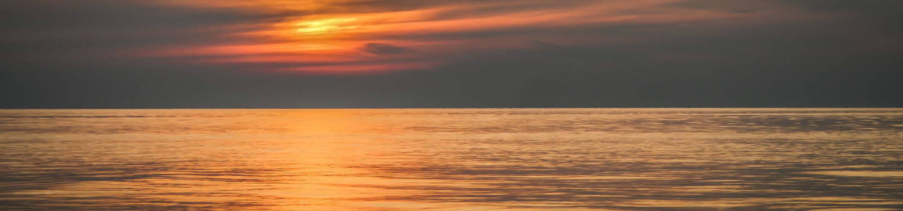

Find Your Inner Light
Path of Light Yoga Studio provides all levels of yoga practice in a tranquil, peaceful environment. Whether you are new to yoga or an experience practicioner, our dedicated instructors can develop a practice to meet your needs. Let your inner light shine at the Path of Light Yoga Studio.
- Hatha, Vinyasa, and Restorative Yoga classes
- Drop-ins welcome
- Mats, blocks and blankets provided
- Relax before or after your class in our Serenity lounge
612 Serenity Way
El Dorado, AZ 86336
888-555-5555